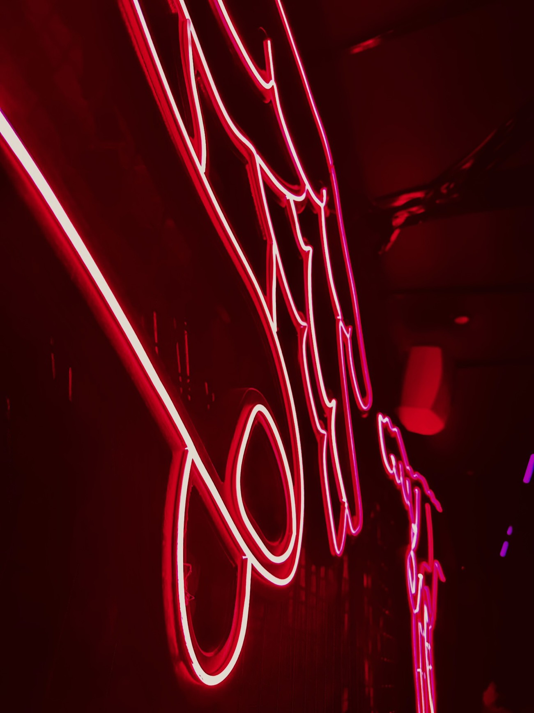

Vom Pilot in die Skalierung, bis digitale Lösungen selbstverständlich genutzt werden und die Arbeit spürbar einfacher machen.
Ausgangslage
Viele Unternehmen haben in KI und digitale Tools investiert, erste Piloten gestartet und einzelne Anwendungsfälle erprobt. Im Alltag bleibt davon oft weniger übrig als erhofft: Die Technik steht, doch sie greift nicht in die Abläufe, Mitarbeitende sind unsicher, und es fehlt die Entscheidung, was wirklich skaliert werden soll.
Vorgehen
Genau hier setzen wir an, nicht bei der Technik selbst, sondern bei ihrer Einführung und Wirkung. Wir entwickeln Anwendungsfälle, die zur echten Arbeit passen, verankern sie in bestehenden Prozessen und befähigen Teams, sie im Alltag zu nutzen.
- Anwendungsfälle, die zur echten Arbeit passen
- Verankerung in bestehenden Prozessen
- Befähigung der Teams statt reiner Werkzeug-Einführung
- klare Entscheidung, was skaliert wird

Wir setzen nicht bei der Technik an, sondern bei ihrer Einführung und Wirkung.
Ergebnis
So begleiten wir den Weg vom Pilot in die Skalierung, bis digitale Lösungen selbstverständlich genutzt werden und die Arbeit spürbar einfacher machen.